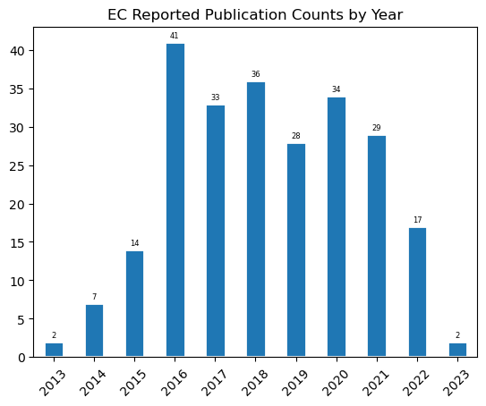

BASIC PUBLICATION ANALYSIS
Contents
BASIC PUBLICATION ANALYSIS#
import pandas as pd
df = pd.read_csv("../outputs/citations.tsv", \
sep="\t", header=None)
df.columns = ['nsfid', 'doi', 'cites']
df.doi = df.doi.str.lower()
df_clean = df.drop_duplicates(subset='doi')
df_clean = df_clean.query('cites>-1')
df_clean.cites.describe()
count 245.000000
mean 18.126531
std 43.525717
min 0.000000
25% 2.000000
50% 6.000000
75% 17.000000
max 388.000000
Name: cites, dtype: float64
total_citations = df_clean.cites.sum()
total_citations
4441
df_clean.head()
| nsfid | doi | cites | |
|---|---|---|---|
| 0 | 1324760 | 10.1016/j.geomorph.2015.03.039 | 19 |
| 2 | 1324760 | 10.2110/sedred.2013.4.9 | 2 |
| 3 | 1324760 | 10.2110/sedred.2013.4 | 0 |
| 4 | 1324760 | 10.1029/2021ef002088 | 0 |
| 5 | 1324760 | 10.1029/2017jf004576 | 10 |
df_clean.sort_values(by='cites', ascending=False)[:10]['cites'].sum() / total_citations
0.4217518576897095
df_clean.sort_values(by='cites', ascending=False)[:1]
| nsfid | doi | cites | |
|---|---|---|---|
| 153 | 1541039 | 10.1080/17538947.2016.1239771 | 388 |
Citations without cite data#
These are the citations to watch for as they may have a problem or be in DataCite. The notebook here explores these further.
df.query("cites <0")
| nsfid | doi | cites | |
|---|---|---|---|
| 117 | 1440351 | 10.1594/ieda/100709 | -1 |
| 118 | 1440351 | 10.1594/ieda/100691 | -1 |
| 121 | 1440351 | 10.6084/m9.figshare.4272164.v1 | -1 |
| 205 | 1541390 | 10.18739/a24m9198b | -1 |
| 220 | 1639683 | 10.6084/m9.figshare.14848713.v1 | -1 |
| 253 | 1639759 | 10.5555/3319379.3319381 | -1 |
| 261 | 1639764 | 10.1594/pangaea.892680 | -1 |
| 262 | 1639557 | 10.1594/pangaea.892680 | -1 |
| 323 | 1928406 | 10.5281/zenodo.5496306 | -1 |
| 350 | 1440066 | 10.13140/rg.2.1.4908.4561 | -1 |
| 353 | 1928393 | 10.5281/zenodo.4558266 | -1 |
| 354 | 1928393 | 10.5281/zenodo.6369184 | -1 |
| 355 | 1639694 | 10.5065/p2jj-9878 | -1 |
TOP 10 MOST CITED PAPERS#
import json
json_nsf = json.load(open("../outputs/full_data_map.json"))
df_json = pd.DataFrame(columns=['doi', 'ams_bib'])
for k in json_nsf.keys():
for r in json_nsf[k]:
if r['doi'] and r.get('ams_bib'):
df_json = pd.concat([df_json, pd.DataFrame([[r['doi'], r['ams_bib'].strip()]], columns=['doi', 'ams_bib'])], axis=0)
df_json = df_json.reset_index().drop('index', axis=1).drop_duplicates()
df_json.doi = df_json.doi.str.lower()
all_cites = \
df\
.drop_duplicates(subset='doi')\
.sort_values(by='cites', ascending=False)[:]\
[['doi', 'cites']]
top10_most_cites = \
df\
.drop_duplicates(subset='doi')\
.sort_values(by='cites', ascending=False)[:10]\
[['doi', 'cites']]
top10_most_cites
| doi | cites | |
|---|---|---|
| 153 | 10.1080/17538947.2016.1239771 | 388 |
| 204 | 10.1002/2017gl074954 | 364 |
| 212 | 10.1038/nbt.4306 | 247 |
| 143 | 10.1038/sdata.2017.88 | 192 |
| 229 | 10.1016/j.renene.2017.02.052 | 145 |
| 125 | 10.1017/qua.2017.105 | 143 |
| 156 | 10.1016/j.compenvurbsys.2016.10.010 | 115 |
| 124 | 10.1093/biosci/biy068 | 102 |
| 100 | 10.1002/2015ea000136 | 98 |
| 27 | 10.2134/jeq2014.05.0220 | 79 |
df_citations = pd.read_csv("../outputs/full_nsf_doi_project_summary.tsv", sep='\t', header=None)
df_citations = df_citations[[1,3]]
df_citations = df_citations.drop_duplicates()
df_citations.index = df_citations[1]
df_citations = df_citations.drop(1, axis=1)
df_citations.columns = ['citation']
top10_most_cites.reset_index()# = top10_most_cites
| index | doi | cites | |
|---|---|---|---|
| 0 | 153 | 10.1080/17538947.2016.1239771 | 388 |
| 1 | 204 | 10.1002/2017gl074954 | 364 |
| 2 | 212 | 10.1038/nbt.4306 | 247 |
| 3 | 143 | 10.1038/sdata.2017.88 | 192 |
| 4 | 229 | 10.1016/j.renene.2017.02.052 | 145 |
| 5 | 125 | 10.1017/qua.2017.105 | 143 |
| 6 | 156 | 10.1016/j.compenvurbsys.2016.10.010 | 115 |
| 7 | 124 | 10.1093/biosci/biy068 | 102 |
| 8 | 100 | 10.1002/2015ea000136 | 98 |
| 9 | 27 | 10.2134/jeq2014.05.0220 | 79 |
top10_most_cites.index = top10_most_cites.doi
top10_most_cites = top10_most_cites.drop(['doi'], axis=1)
top10_merged = \
top10_most_cites.merge(df_citations, left_index=True, right_index=True)\
[['cites', 'citation']]
top10_merged.index.set_names('DOI')
with open("../outputs/top10_pubs_simple.md", "w", encoding='utf-8') as fo:
fo.write(
top10_merged.to_markdown(index=True)
)
top10_merged.to_csv("../outputs/top10_pubs_simple.csv", index=False)
---------------------------------------------------------------------------
ModuleNotFoundError Traceback (most recent call last)
File ~\Anaconda3\envs\soarsbook\lib\site-packages\pandas\compat\_optional.py:142, in import_optional_dependency(name, extra, errors, min_version)
141 try:
--> 142 module = importlib.import_module(name)
143 except ImportError:
File ~\Anaconda3\envs\soarsbook\lib\importlib\__init__.py:127, in import_module(name, package)
126 level += 1
--> 127 return _bootstrap._gcd_import(name[level:], package, level)
File <frozen importlib._bootstrap>:1030, in _gcd_import(name, package, level)
File <frozen importlib._bootstrap>:1007, in _find_and_load(name, import_)
File <frozen importlib._bootstrap>:984, in _find_and_load_unlocked(name, import_)
ModuleNotFoundError: No module named 'tabulate'
During handling of the above exception, another exception occurred:
ImportError Traceback (most recent call last)
Cell In [17], line 10
7 top10_merged.index.set_names('DOI')
8 with open("../outputs/top10_pubs_simple.md", "w", encoding='utf-8') as fo:
9 fo.write(
---> 10 top10_merged.to_markdown(index=True)
11 )
13 top10_merged.to_csv("../outputs/top10_pubs_simple.csv", index=False)
File ~\Anaconda3\envs\soarsbook\lib\site-packages\pandas\core\frame.py:2841, in DataFrame.to_markdown(self, buf, mode, index, storage_options, **kwargs)
2839 kwargs.setdefault("tablefmt", "pipe")
2840 kwargs.setdefault("showindex", index)
-> 2841 tabulate = import_optional_dependency("tabulate")
2842 result = tabulate.tabulate(self, **kwargs)
2843 if buf is None:
File ~\Anaconda3\envs\soarsbook\lib\site-packages\pandas\compat\_optional.py:145, in import_optional_dependency(name, extra, errors, min_version)
143 except ImportError:
144 if errors == "raise":
--> 145 raise ImportError(msg)
146 else:
147 return None
ImportError: Missing optional dependency 'tabulate'. Use pip or conda to install tabulate.
all_cites.index = all_cites.doi
all_cites = all_cites.drop(['doi'], axis=1)
all_cites_merged = \
all_cites.merge(df_citations, left_index=True, right_index=True)\
[['cites', 'citation']]
with open("../outputs/all_pubs_simple.md", "w", encoding='utf-8') as fo:
fo.write(
all_cites_merged.to_markdown(index=False)
)
all_cites_merged.to_csv("../outputs/all_pubs_simple.csv", index=False)
PUBLICATION FREQUENCY COUNTS#
# graph
df = pd.read_csv("../outputs/full_nsf_doi_project_summary.tsv",sep='\t').query('cites>-1')\
.drop_duplicates(subset='doi')
df.cites.value_counts().sort_index()[10:].sum()
92
ax = df.query('year != "None"').year.value_counts().sort_index()\
.plot.bar(rot=45, title='EC Reported Publication Counts by Year', edgecolor='white', linewidth=2)
for container in ax.containers:
ax.bar_label(container, padding=2, fontsize=6)
ax.get_figure().savefig("../outputs/fig_publications_by_year.png", dpi=300)

ax = pd.cut(df.cites, [-1,9,30,100,1000], labels=["<10","10-29", "30-99", ">99"])\
.value_counts().sort_index()\
.plot.bar(rot=0, xlabel="Citation count", ylabel="Publication Count", title="EC Publication Frequency")
for container in ax.containers:
ax.bar_label(container, padding=2, fontsize=6)
ax.get_figure().savefig("../outputs/fig_publications_citation_density.png", dpi=300)